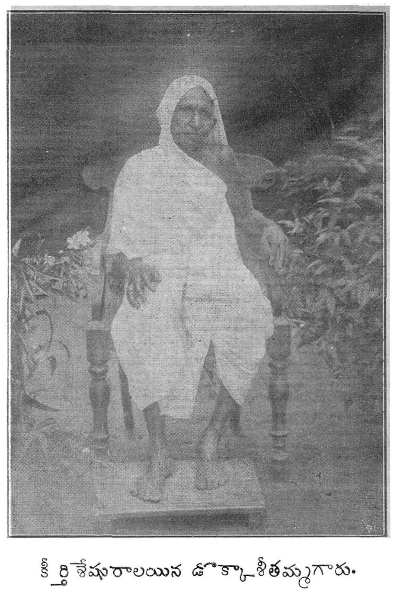

Who Was Dokka Seethamma?
Dokka Seethamma was one of Andhra Pradesh's most respected philanthropists. She became famous for serving food to travelers, the poor, and anyone who arrived at her doorstep with hunger. She believed that kindness begins with feeding those in need.
"A hungry person should never leave without food."